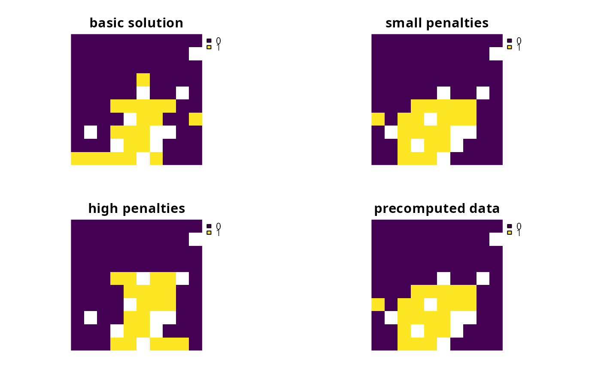
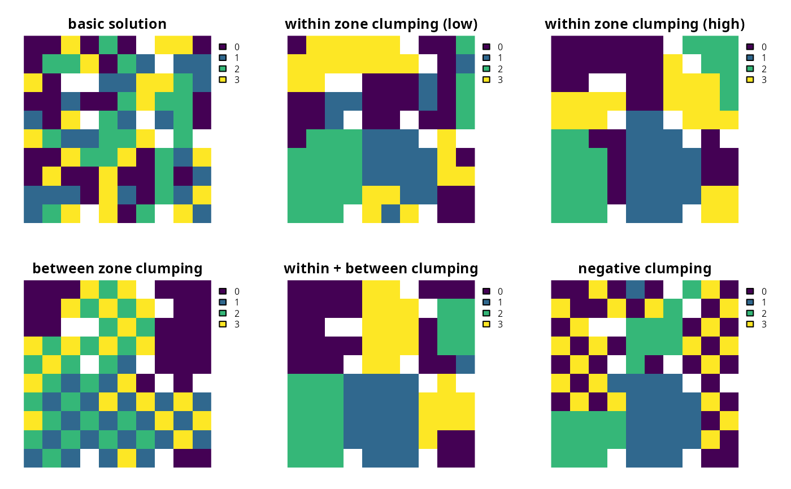

Add penalties to a conservation planning problem() to favor solutions
that spatially clump planning units together based on the overall
boundary length (perimeter).
add_boundary_penalties(
x,
penalty,
edge_factor = rep(0.5, number_of_zones(x)),
zones = diag(number_of_zones(x)),
data = NULL
)| x |
|
|---|---|
| penalty |
|
| edge_factor |
|
| zones |
|
| data |
|
Object (i.e. ConservationProblem) with the penalties
added to it.
This function adds penalties to a conservation planning problem
to penalize fragmented solutions. It was is inspired by Ball et al.
(2009) and Beyer et al. (2016). The penalty argument is
equivalent to the boundary length modifier (BLM) used in
Marxan.
Note that this function can only
be used to represent symmetric relationships between planning units. If
asymmetric relationships are required, use the
add_connectivity_penalties() function.
The argument to data can be specified using the following formats.
Note that boundary data must always describe symmetric relationships
between planning units.
data as a NULL valueindicating that the data should be
automatically calculated using the boundary_matrix() function.
This argument is the default.
Note that the boundary data must be supplied
using one of the other formats below if the planning unit data
in the argument to x do not explicitly contain spatial information
(e.g. planning unit data are a data.frame or numeric class).
data as a matrix/Matrix objectwhere rows and columns represent different planning units and the value of each cell represents the amount of shared boundary length between two different planning units. Cells that occur along the matrix diagonal represent the amount of exposed boundary associated with each planning unit that has no neighbor (e.g. these value might pertain to boundaries along a coastline).
data as a data.frame objectwith the columns "id1",
"id2", and "boundary". The "id1" and "id2" columns contain
identifiers (indices) for a pair of planning units, and the "boundary"
column contains the amount of shared boundary length between these
two planning units.
This format follows the the standard Marxan format for boundary
data (i.e. per the "bound.dat" file).
The boundary penalties are implemented using the following equations. Let
\(I\) represent the set of planning units
(indexed by \(i\) or \(j\)), \(Z\) represent
the set of management zones (indexed by \(z\) or \(y\)), and
\(X_{iz}\) represent the decision
variable for planning unit \(i\) for in zone \(z\) (e.g. with binary
values one indicating if planning unit is allocated or not). Also, let
\(p\) represent the argument to penalty, \(E_z\) represent the
argument to edge_factor, \(B_{ij}\) represent the matrix argument
to data (e.g. generated using boundary_matrix()), and
\(W_{zz}\) represent the matrix argument to zones.
$$ \sum_{i}^{I} \sum_{j}^{I} \sum_{z}^{Z} (\mathit{ifelse}(i == j, E_z, 1) \times p \times W_{zz} B_{ij}) + \sum_{i}^{I} \sum_{j}^{I} \sum_{z}^{Z} \sum_{y}^{Z} (-2 \times p \times X_{iz} \times X_{jy} \times W_{zy} \times B_{ij})$$
Note that when the problem objective is to maximize some measure of benefit and not minimize some measure of cost, the term \(p\) is replaced with \(-p\).
Ball IR, Possingham HP, and Watts M (2009) Marxan and relatives: Software for spatial conservation prioritisation in Spatial conservation prioritisation: Quantitative methods and computational tools. Eds Moilanen A, Wilson KA, and Possingham HP. Oxford University Press, Oxford, UK.
Beyer HL, Dujardin Y, Watts ME, and Possingham HP (2016) Solving conservation planning problems with integer linear programming. Ecological Modelling, 228: 14--22.
See penalties for an overview of all functions for adding penalties.
Other penalties:
add_connectivity_penalties(),
add_feature_weights(),
add_linear_penalties()
# set seed for reproducibility
set.seed(500)
# load data
data(sim_pu_raster, sim_features, sim_pu_zones_stack, sim_features_zones)
# create minimal problem
p1 <- problem(sim_pu_raster, sim_features) %>%
add_min_set_objective() %>%
add_relative_targets(0.2) %>%
add_binary_decisions() %>%
add_default_solver(verbose = FALSE)
# create problem with low boundary penalties
p2 <- p1 %>% add_boundary_penalties(50, 1)
# create problem with high boundary penalties but outer edges receive
# half the penalty as inner edges
p3 <- p1 %>% add_boundary_penalties(500, 0.5)
# create a problem using precomputed boundary data
bmat <- boundary_matrix(sim_pu_raster)
p4 <- p1 %>% add_boundary_penalties(50, 1, data = bmat)
# \dontrun{
# solve problems
s <- stack(solve(p1), solve(p2), solve(p3), solve(p4))
# plot solutions
plot(s, main = c("basic solution", "small penalties", "high penalties",
"precomputed data"), axes = FALSE, box = FALSE)

# }
# create minimal problem with multiple zones and limit the run-time for
# solver to 10 seconds so this example doesn't take too long
p5 <- problem(sim_pu_zones_stack, sim_features_zones) %>%
add_min_set_objective() %>%
add_relative_targets(matrix(0.2, nrow = 5, ncol = 3)) %>%
add_binary_decisions() %>%
add_default_solver(time_limit = 10, verbose = FALSE)
# create zone matrix which favors clumping planning units that are
# allocated to the same zone together - note that this is the default
zm6 <- diag(3)
print(zm6)
#> [,1] [,2] [,3]
#> [1,] 1 0 0
#> [2,] 0 1 0
#> [3,] 0 0 1
# create problem with the zone matrix and low penalties
p6 <- p5 %>% add_boundary_penalties(50, zone = zm6)
# create another problem with the same zone matrix and higher penalties
p7 <- p5 %>% add_boundary_penalties(500, zone = zm6)
# create zone matrix which favors clumping units that are allocated to
# different zones together
zm8 <- matrix(1, ncol = 3, nrow = 3)
diag(zm8) <- 0
print(zm8)
#> [,1] [,2] [,3]
#> [1,] 0 1 1
#> [2,] 1 0 1
#> [3,] 1 1 0
# create problem with the zone matrix
p8 <- p5 %>% add_boundary_penalties(500, zone = zm8)
# create zone matrix which strongly favors clumping units
# that are allocated to the same zone together. It will also prefer
# clumping planning units in zones 1 and 2 together over having
# these planning units with no neighbors in the solution
zm9 <- diag(3)
zm9[upper.tri(zm9)] <- c(0.3, 0, 0)
zm9[lower.tri(zm9)] <- zm9[upper.tri(zm9)]
print(zm9)
#> [,1] [,2] [,3]
#> [1,] 1.0 0.3 0
#> [2,] 0.3 1.0 0
#> [3,] 0.0 0.0 1
# create problem with the zone matrix
p9 <- p5 %>% add_boundary_penalties(500, zone = zm9)
# create zone matrix which favors clumping planning units in zones 1 and 2
# together, and favors planning units in zone 3 being spread out
# (i.e. negative clumping)
zm10 <- diag(3)
zm10[3, 3] <- -1
print(zm10)
#> [,1] [,2] [,3]
#> [1,] 1 0 0
#> [2,] 0 1 0
#> [3,] 0 0 -1
# create problem with the zone matrix
p10 <- p5 %>% add_boundary_penalties(500, zone = zm10)
# \dontrun{
# solve problems
s2 <- stack(category_layer(solve(p5)), category_layer(solve(p6)),
category_layer(solve(p7)), category_layer(solve(p8)),
category_layer(solve(p9)), category_layer(solve(p10)))
# plot solutions
plot(s2, main = c("basic solution", "within zone clumping (low)",
"within zone clumping (high)", "between zone clumping",
"within + between clumping", "negative clumping"),
axes = FALSE, box = FALSE)

# }